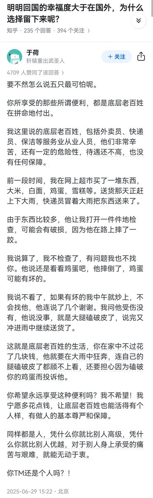

月影独下
@tadatsukiei
@dutyge 中国的制度是压榨大部分人来满足剥削者的，我曾是被剥削者，理解他们的辛酸，所以无法接受自己去享受这样的“便利”、成为这罪恶的剥削制度的受益者。
你当然可以说有便宜不占王八蛋，我完全理解并支持，只是敌不过心中的道德洁癖，自己做不到而已。

失业观察日报
@dutyge
明明回国的幸福度大于留在国外，为什么就不回来呢？
👇 https://t.co/eGuxJ9jxjf